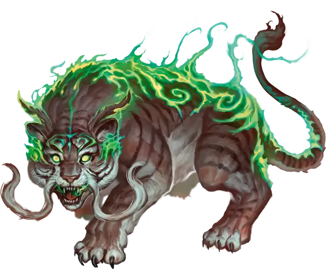

Земной зверь
Beast of the Land
Средний Зверь, без мировоззрения

Класс Доспеха 13 + бонус мастерства (природный доспех)
Хиты 5 + пятикратный уровень следопыта (количество костей хитов (к8) зверя равно вашему уровню следопыта)
Скорость 40 футов, лазая 40 футов
| мод | спас | ||
|---|---|---|---|
| СИЛ | 14 | +2 | +2 |
| ЛОВ | 14 | +2 | +2 |
| ТЕЛ | 15 | +2 | +2 |
| мод | спас | ||
|---|---|---|---|
| ИНТ | 8 | −1 | −1 |
| МДР | 14 | +2 | +2 |
| ХАР | 11 | +0 | +0 |
Чувства тёмное зрение 60 футов, пассивное Восприятие 12
Языки понимает языки, на которых вы говорите
Опасность —
Особенности
Атака в броске. Если зверь переместится как минимум на 20 футов по прямой к цели, а затем попадёт по ней растерзанием в том же ходу, цель дополнительно получит 1к6 рубящего урона. Если целью является существо, оно должно преуспеть в спасброске Силы Сл спасброска ваших заклинаний, иначе будет сбито с ног.
Первичная связь. Вы можете добавить свой бонус мастерства к любой проверке характеристик или спасброску, которые совершает зверь.
Действия
Растерзание. Рукопашная атака оружием: ваш модификатор броска атаки заклинанием к попаданию, досягаемость 5 футов, одна цель. Попадание: 1к8 + 2 + БМ рубящего урона.
Описание
См. архетип следопыта «повелитель зверей».